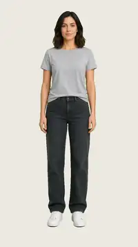
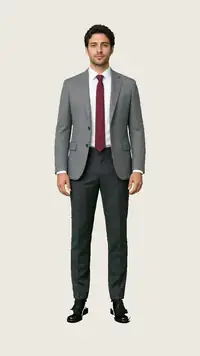
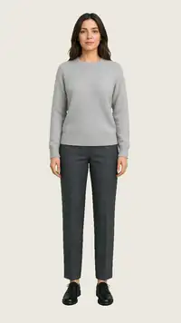
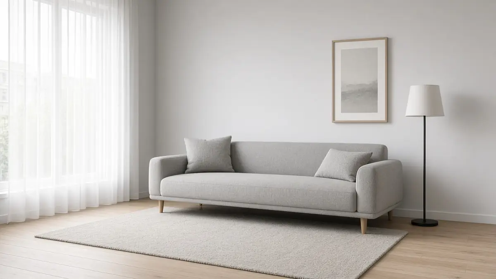
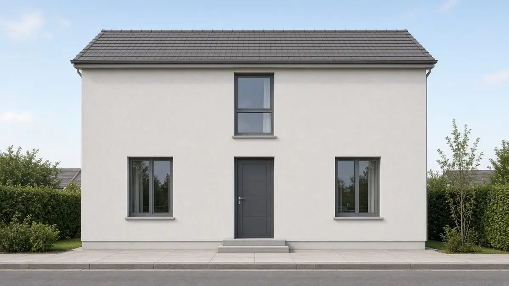

YesStyle’s stylist column walks through everyday clothes from plates such as 273, 167, and 276, and treats one or two colors as the main area. The studio maps a plate onto a shirt, a layer, trousers, and shoes, across 22 photographed looks.
Open the outfit studio →

KOJO Art describes stylists using the book to hold a room together, from paint to cloth to the art on the wall. Five photographed rooms start with the lightest color on the large surfaces.
Open the room studio →

An exterior is mostly one field plus a door and a frame. The elevation is a target for a paint fan, not the paint itself.
Open the facade →
Print001After Sanzo Wada
The same plate can color a wordmark, a short page, and a poster. Type stays in a neutral ink. Check contrast before you set small text.
Open the brand page →